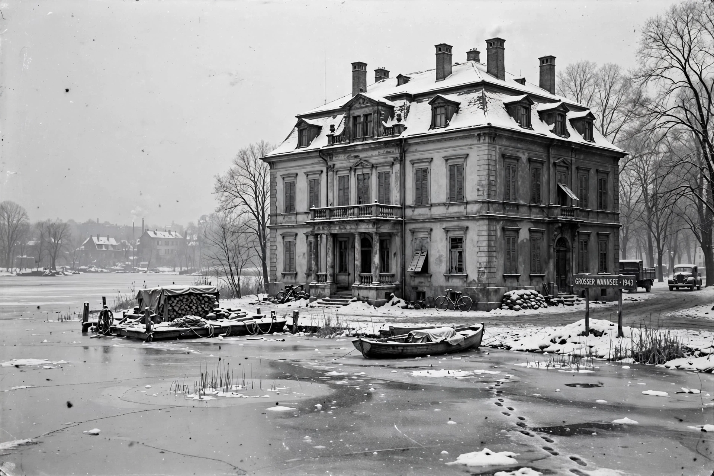

| Date | 20 January 1942 |
|---|---|
| Location | Am Grossen Wannsee 56–58, Berlin |
| Chair | Reinhard Heydrich |
| Participants | 15 senior Nazi officials |
| Outcome | Coordination of the "Final Solution" |
The Wannsee Conference was a meeting of senior government officials of Nazi Germany and SS leaders, held in the Berlin suburb of Wannsee on 20 January 1942. The purpose of the conference, called by Reinhard Heydrich, chief of the Reich Security Main Office, was to ensure the cooperation of the administrative leaders of various government departments in the implementation of the regime's plan for the deportation and murder of the Jews of Europe — the so-called "Final Solution to the Jewish Question".
Mass killing of Jews had already begun following the invasion of the Soviet Union in June 1941, and on 31 July 1941 Hermann Göring authorised Heydrich in writing to prepare a "total solution of the Jewish question" in the German sphere of influence. The conference was originally scheduled for December 1941 but was postponed after the Japanese attack on Pearl Harbor and Germany's declaration of war on the United States.
Fifteen officials attended, representing the SS, the Nazi Party Chancellery, the ministries of the Interior, Justice, Foreign Affairs and the Occupied Eastern Territories, the Gestapo and the General Government of Poland. Heydrich announced that some eleven million Jews across Europe — including those in Britain, Ireland and neutral states — were to be "evacuated to the East", where they would be worked, starved and ultimately murdered; those who survived would be "treated accordingly". The discussion settled jurisdictional questions, including the treatment of persons of mixed ancestry (Mischlinge), in euphemistic bureaucratic language.
Adolf Eichmann, who prepared the invitations and statistical materials, took the minutes. One copy of the resulting protocol — copy number 16 of 30 — survived in the files of the Foreign Office's Martin Luther and was recovered by Allied investigators in 1947. It became key evidence at the Nuremberg trials.
Historians debate the conference's role: the decision to murder Europe's Jews had effectively been taken beforehand, and Wannsee's significance lies chiefly in coordinating the whole state apparatus behind the genocide and confirming the SS's leading role in it.
The villa now houses the House of the Wannsee Conference memorial and educational site, opened in 1992.